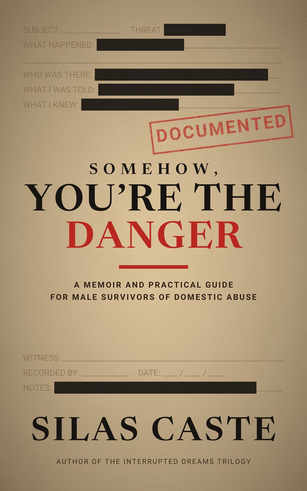

The story behind the thrillers
For years, Silas Caste was the man everyone half expected to be the problem. His ex-wife reported him to child protective services again and again. A judge ruled that domestic violence had occurred, on the strength of bruises he never caused.
Then, on February 6, 2012, his ex-wife held him at gunpoint in his own home and shot him. She was sentenced to 50 years in prison. He survived, and went on to raise his two sons.
He turned that night into Interrupted Dreams, a thriller that carries the truth inside a story. Then he wrote the true version.
Read more about Silas
The true story

Somehow, You’re the Danger
A Memoir and Practical Guide for Male Survivors of Domestic Abuse
The true story of what came before that night, and the practical guide Silas wishes someone had handed him: how to recognize abuse that leaves no mark, why the system keeps missing male victims, and how to document, survive family court, and rebuild.
Kindle edition
1 in 6
American men have experienced physical or sexual violence, or stalking, from an intimate partner.
20M+
men in the United States, by the CDC’s own count.
1 in 5
have experienced psychological aggression: being monitored, cut off from friends and family, or having decisions made for them.
Source: CDC, National Intimate Partner and Sexual Violence Survey. Lifetime figures.